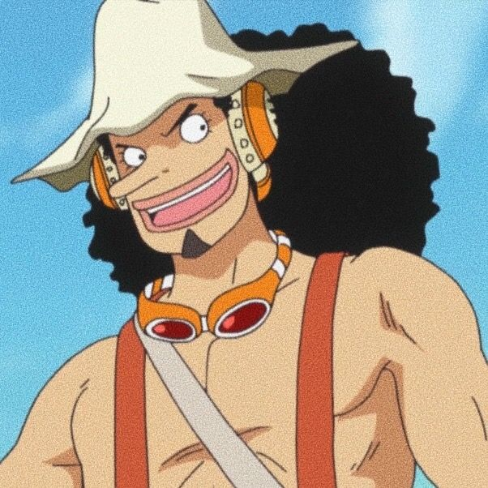
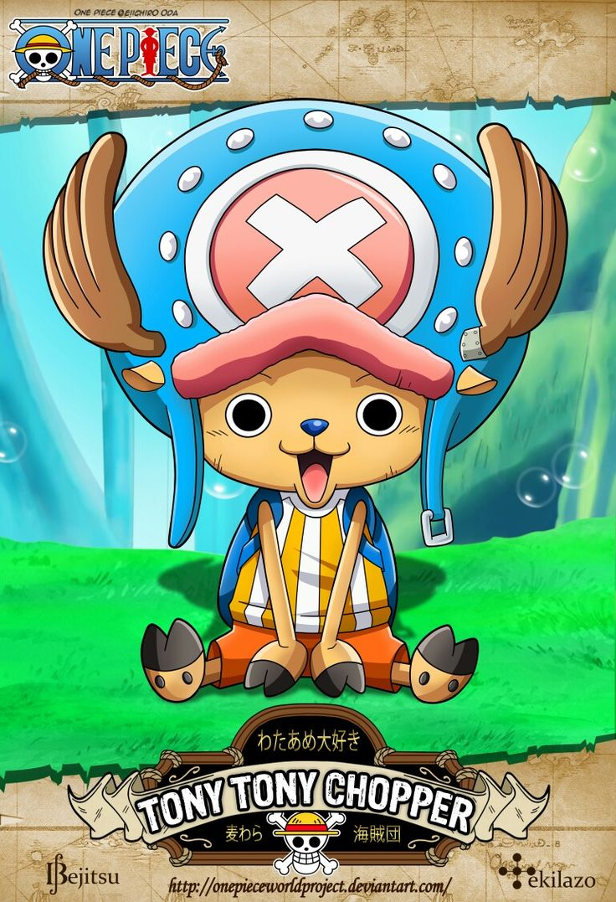

Hace mucho tiempo existió un hombre que acumuló riqueza, fama y poder. Lo llamaban el Rey de los Piratas, aunque su nombre era Gold Roger. Las palabras que pronunció antes de morir están grabadas en la memoria de todos los marinos de la historia…
Todo mi tesoro está escondido en el mar, se lo quedará aquel que sea capaz de encontrarlo.
Así empezó la era de los piratas del mar.
Monkey D. Luffy es un chico que ha probado la fruta del diablo, la goma goma, convirtiéndose así un humano con un cuerpo de goma. Pero las frutas del diablo tienen un precio, se dice que serás odiado para siempre por los mares y no podrá nadar nunca más.
Luffy saldrá al mar a solas, en busca de gente confiable para su tripulación pirata con la intención de encontrar el One Piece, el tesoro más deseado del mundo, aquel que dejó atrás el rey de los piratas.
PERSONAJES
LUFFY
ZORO
SANJI
NAMI

USSOP

CHOPER
TRAILER
Nace en la prefectura de Kumamoto en 1975. Sueña con ser dibujante desde la edad de cuatro años.
Su obra corta Wanted, dibujada mientras estudiaba en el instituto, gana la 44.ª edición del Premio Tezuka (1992). Después de trabajar como ayudante, debuta profesionalmente en 1997 con One Piece, publicada en Weekly Shonen Jump.
One Piece se ha ganado el apoyo de todos los públicos gracias a una historia emocionante de acción desenfrenada y al carisma de los personajes. Su adaptación a la animación, al cine y a los videojuegos la ha convertido en una exitosa franquicia que cuenta con un gran número de seguidores en todas partes del mundo.
Sus influencias artísticas van desde el maestro Akira Toriyama, pasando por Sergio Aragones hasta incluso la película Yellow Submarine.
¡El rey de los piratas, será él! ¡Completamente recuperado, Luffy parte de nuevo para enfrentarse a Kaido! ¿Cuál será el resultado de la batalla culminante entre estos dos increíbles oponentes? Mientras tanto, en varios lugares de la isla de Onigashima, las feroces batallas libradas por los camaradas de Sombrero de Paja contra la gran banda pirata de las Cien bestias llegan a su fin. ¡El arco de Wano está en su apogeo! ¡Continúan las aventuras de Luffy en busca de One Piece!